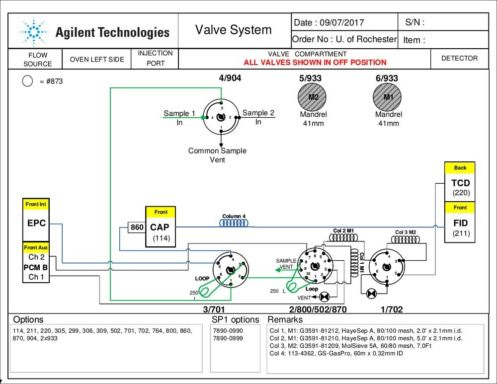

The GC's gas-routing valve system and columns, plus fixes for the problems you're most likely to hit while running a reaction.
The GC valve system (Agilent 7890, University of Rochester, commissioned 09/07/2017) controls gas-flow routing through the columns and sample loops. In the reference schematic below, all valves are shown in the OFF position.
| Valve / component | Function |
|---|---|
| 4 / 904 | Sample-selection valve — routes Sample 1 or Sample 2 in; Common Sample Vent out |
| 3 / 701 | Valve with 250 µL loop — front section |
| 2 / 800 / 502 / 870 | Central multi-function valve with 250 µL loop and SAMPLE VENT |
| 1 / 702 | Rear valve routing to Col 3 M2 / VENT |
| 5 / 933 (M2) | Mandrel 41 mm — Column 3 M2 carrier |
| 6 / 933 (M1) | Mandrel 41 mm — Column 1 M1 carrier |
| CAP (114) | Front capillary inlet with valve 860 |
| EPC / PCM B | Front Inlet (Electronic Pressure Control) and Front Aux Channels 1 & 2 |

| Column | Part # | Type | Dimensions |
|---|---|---|---|
| Col 1, M1 | G3591-81212 | HayeSep A, 80/100 mesh | 2.0 ft × 2.1 mm i.d. |
| Col 2, M1 | G3591-81210 | HayeSep A, 80/100 mesh | 5.0 ft × 2.1 mm i.d. |
| Col 3, M2 | G3591-81209 | MolSieve 5A, 60/80 mesh | 7.0 ft |
| Col 4 | 113-4362 | GS-GasPro capillary | 60 m × 0.32 mm i.d. |
| Issue | Solution |
|---|---|
| Temperature controller not powering on | Press the RESET button on the power switch — it may have tripped off. |
| Heating tape not working | Check for electrical shorts from heating tape wrapped on itself. Re-wrap the tape on the tubing only, not on other tape. If burnt out, replace it. |
| Bypass or reactor not holding pressure | Apply Snoop or soap water to all connection points. Bubbles = leak. Tighten carefully — do not over-tighten. |
| Brooks software shows no gas flow | Check cylinder pressure — replace if below 300 psi. For CO: check the EZ gas-cabinet controller on top of the gas cabinet; if it shows a red light, press its RESET button. |
| GC sequence aborts when started | Check the GC monitor for fault notices. Press Front Det, Back Det, and Oven to verify temperature stability. Check the Zero Air cylinder (replace if <300 psi). If all else fails, restart the GC and computer. |
| Hydrocarbons showing in a bypass run | Residual hydrocarbons in the bypass line. Open the bypass outlet and flush with inert gas. Re-check all fittings for leaks with Snoop. |
| FID detector not igniting | Confirm the H₂ cylinder is ≥300 psi (replace if not) and restart the GC. If it still fails, manually ignite: Config → Front Det (or Back Det) → scroll to Ignore Ignitor → set to True. Note: with Ignore Ignitor on True, the GC cannot auto-detect whether the flame is lit. |
| Pressure build-up in the second back-pressure regulator | Replace the filter after the reactor. See the Reactor Maintenance SOP for the detailed procedure. |